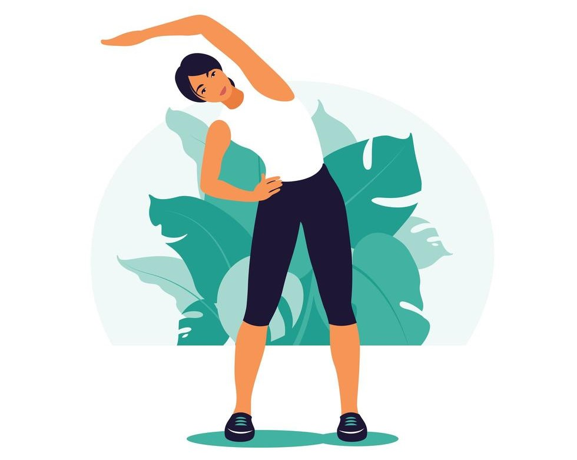
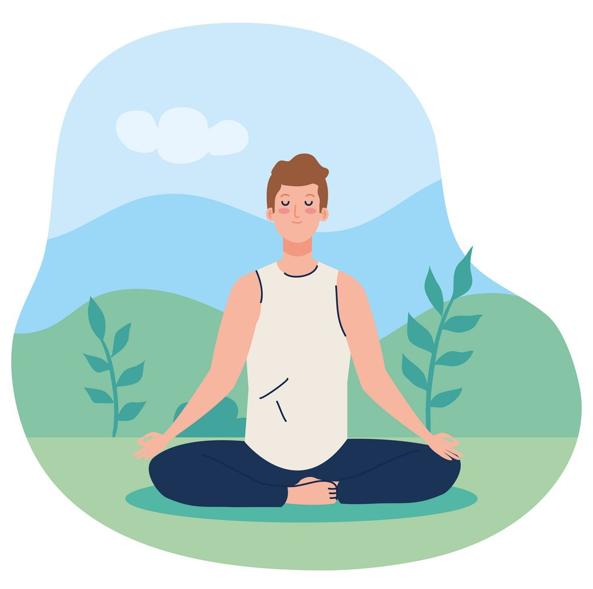
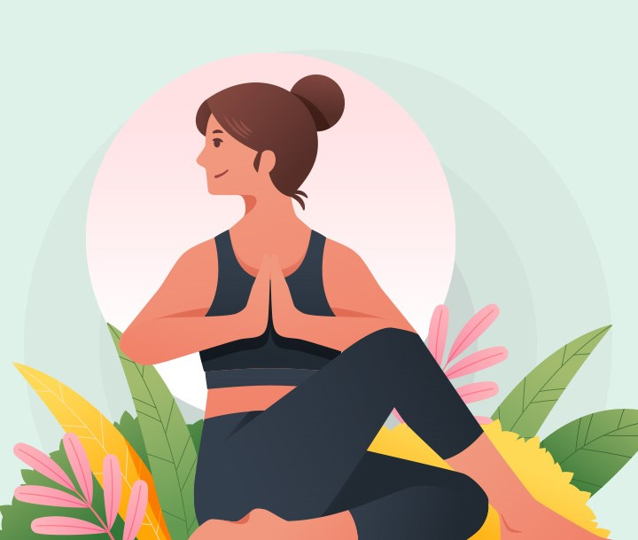

"Running is not just for those who are fit and healthy and strong. Running is a life-breathe for those who struggle with physical and mental illness, self-doubt, loss, anger, regret and other unspeakable pains. Why? Because running has the power to heal, to bring perspective, to instil confidence, to restore sanity and to make us believers again. This is why I run." |

|
People who exercise regularly have better mental health and emotional wellbeing, and lower rates of mental illness. Exercise is important for people with mental illness – it not only boosts our mood, concentration and alertness, but improves our cardiovascular and overall physical health. Exercise doesn’t have to be strenuous, structured or take a long time to have benefits.
Often, people who exercise regularly do it simply because it makes them feel good. Exercise can boost your mood, concentration and alertness. It can even help give you a positive outlook on life. The link between exercise and mental health is complicated.
The physical benefits of exercise are also important for people with mental illness. It improves your cardiovascular health and overall physical health. This is important because people with mental health issues are at a higher risk of suffering from chronic physical conditions such as heart disease, diabetes, arthritis and asthma.
Adults should be active most days, preferably every day. Each week, adults should do either:
Doing any physical activity is better than doing none. If you do no physical activity right now, start by doing some, then slowly build up to the recommended amount. Physical activity doesn’t have to be structured. Making some small changes to your daily routine can make a big difference. For example, you could:
If you and your baby are healthy, This means being active most days, preferably every day, to a weekly total of either:
Physical activity during pregnancy doesn’t have to be vigorous to be beneficial. For a simple way to measure intensity, try the ‘talk test’. You should be able to carry on a conversation during moderate intensity activities, but in vigorous intensity activities you would find this difficult.
As your pregnancy progresses and your body changes, you might have to modify your physical activity. Avoid any activity that:
To exercise safely:
If you have complications get expert advice from a health professional before starting, continuing or returning to physical activity.
For people aged 65 years and over, we recommend at least 30 minutes of moderate intensity physical activity on most, preferably all, days.
Fitness activities are good for your heart, lungs and blood vessels, and can include:
For some people with disability, physical activity can be a challenge. This can be due to mobility issues or a lack of accessible and inclusive gyms and other exercise spaces. if you have:
"Meditation is acceptance. It is the acceptance of life within us, without us and all around us. Acceptance of life is the beginning of human satisfaction" |

|
Meditation is a great way to relax and quiet your mind. It can even have beneficial psychological and physical effects. According to the Mayo Clinic, meditation is a great stress reducer that can calm you and bring relaxation. Calming meditation can help you sleep better, focus better at work and remain calm throughout the day. You can use meditation for mind relaxation to start your day, midday, to end your day or all of the above. Meditation techniques to calm your mind are easy to learn. Use the following calming meditation techniques to promote mental quiet and inner balance:
“Yoga is invigoration in relaxation, freedom in routine, confidence through self-control, energy within and energy without.” |

|
yoga is a vast collection of spiritual techniques and practices aimed at integrating mind, body, and spirit to achieve a state of enlightenment or oneness with the universe.